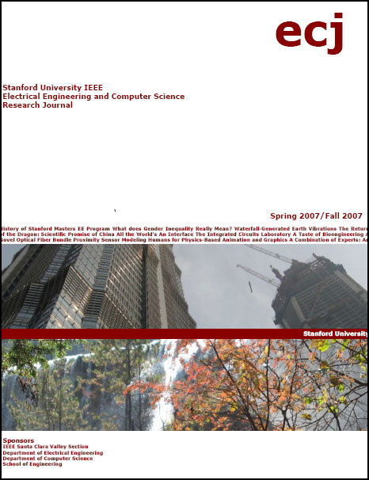
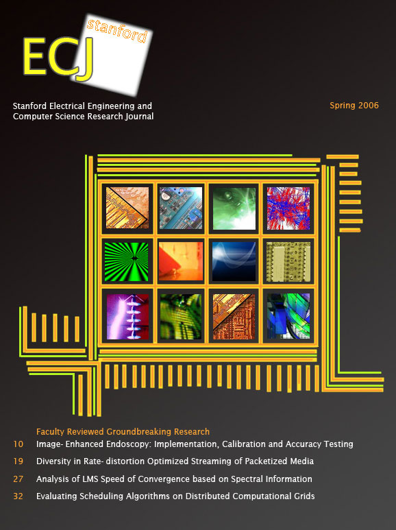
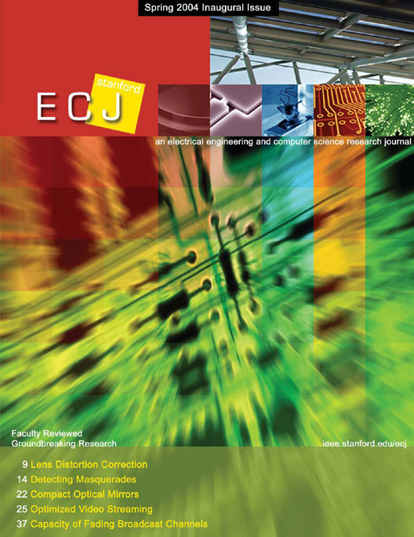

Fall 2007 Issue

What Does Gender Equality Really Mean?
Erin Hsu
The Evolution of the Stanford MSEE Program
Omair I. Saadat
All The World’s An Interface
Amal Dar Aziz
A Novel Optical Fiber Bundle Proximity Sensor
Michael Fischer
Waterfall-Generated Earth Vibrations
Austin D. Haugen and Jarupon P. Sathira
A Taste of Bioengineering
Spencer Chu
The Integrated Circuits Laboratory
Vincent Mei
Combination of Experts
David Cohen and Jim Rodgers

Spring 2006 Issue
Editors' Pieces
Amal Aziz, Tom Wang, Amy Wu
Interview with Authors
Jacob Chakareski, Aaron Flores, Ryan Wisnesky
Image-Enhanced Endoscopy: Implementation, Calibration and Accuracy Testing
Michael Bax, Rasool Khadem, and Ramin Shahidi
Diversity in Rate-distortion Optimized Streaming of Packetized Media
Jacob Chakareski
Analysis of LMS speed of convergence based on spectral information
Aaron E. Flores
Evaluating Scheduling Algorithms on Distributed Computational Grids
Spring 2004 Issue
